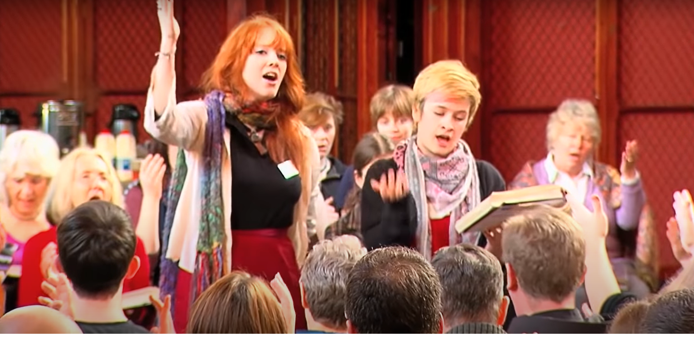

Shape note singing — Wisconsin
Shape Note Singing is a unique form of musical expression that originated in colonial North America. Here are just a few things that make this musical tradition unique:
- We are not a choir. We do not have auditions. We sing for ourselves and for each other.
- All songs are sung a cappella (with no instruments.)
- Singers sit facing each other across a “hollow square” and take turns leading songs.
- The music is printed with notes of different shapes, each shape corresponds to a syllable: fa, sol, la, or mi.
- Participants are free to (and do) sing loudly!
- No musical experience or religious affiliation is required to sing with us.
See the schedule below to see when we sing. To join our email list, click here.
"… we our voices high should raise …"
The Sacred Harp,
59 Holy Manna